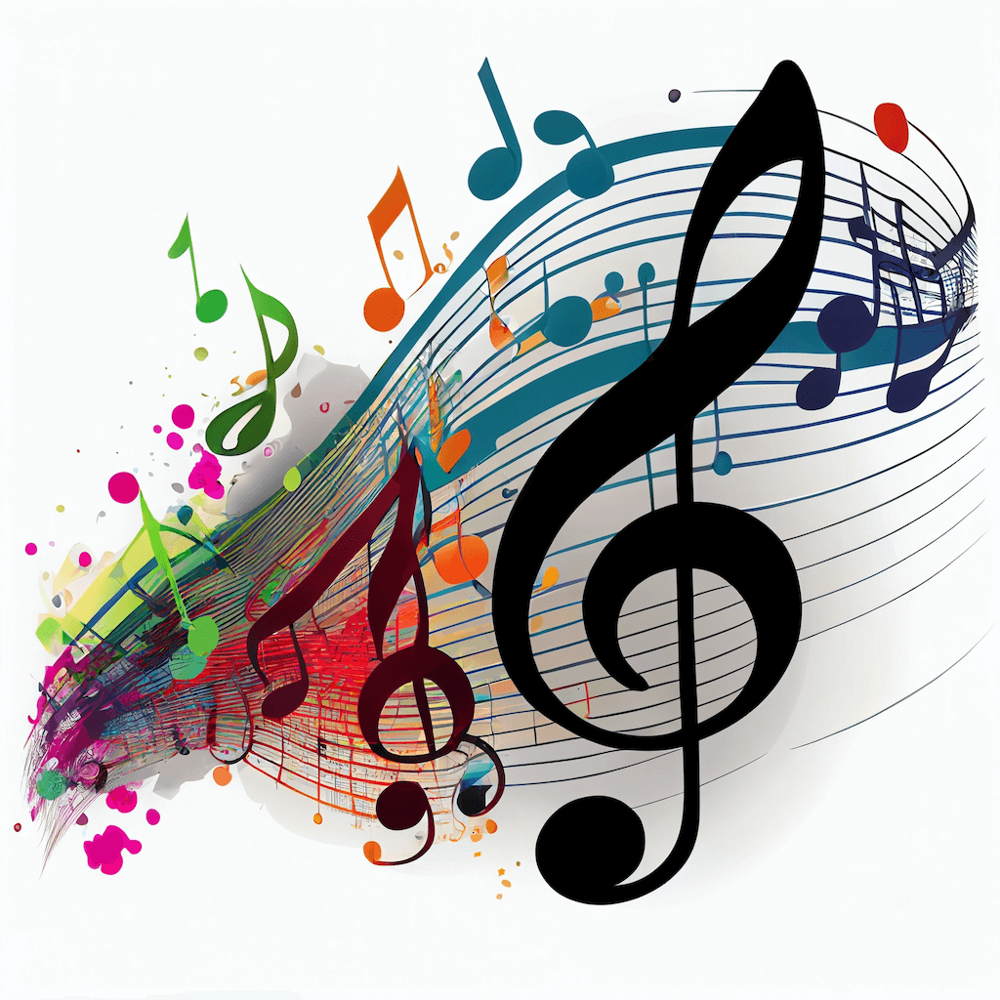
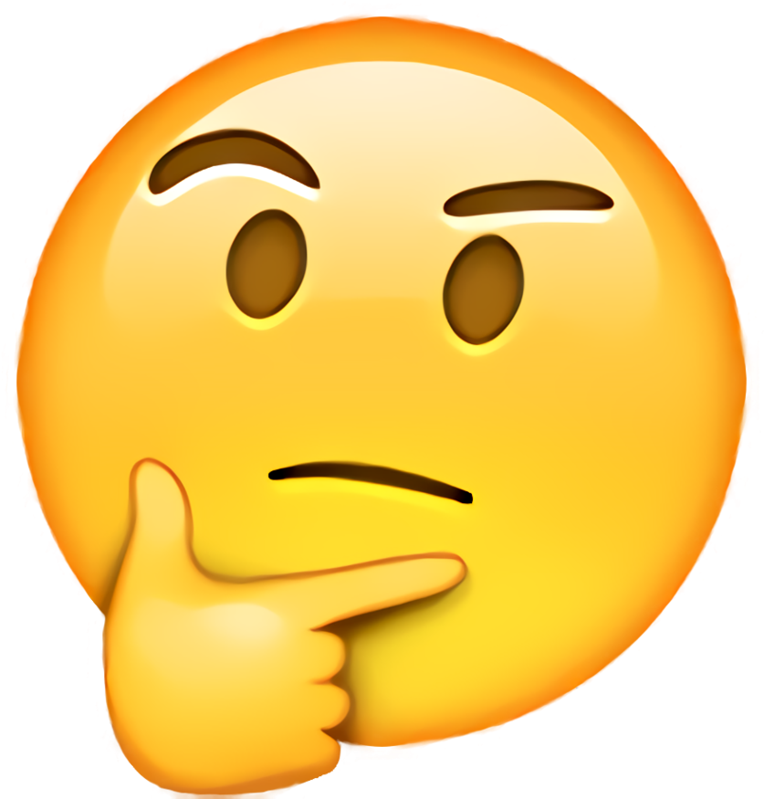

Welcome
Hello and Welcome to The Art of Video Games Music!
On this website, you'll learn why video game music matters to developers and musicians alike.
Similar to how Video Game Art, Controls, or History is important for artists and developers, I feel like the music in games is very important too!
On the website
Explore music, ideas, and inspiration
You'll find earworms, game soundtracks, and research about the musicians and developers who show how powerful video game music can be.

Music helps make a game work
Why is this here?
I want to express my feelings about video game music because I feel like it's a key part of making a game work well with the art and controls. Not just that, I genuinely feel like it really did inspire other musicians and developers alike to make their own game or help with music for a game.
Whether it's a rhythm game or a game that needs impactful music, or needs samples that help make some musical artists well known, video game soundtracks are important as well, like the art and controls of video games.

A future video game developer
About Me
I am a future Video Game Developer, and I wanted to express my feelings towards music in Video Games because my imagination will always ignite when I hear a Video Game Soundtrack, which gets me going and happy, even remembering said ideas.
While in class, I thought about whether others may've had the same feeling as I did: The thought of Video Games with or without their music creating, well, their own music for their own game or album.
That's what I did here: I did research and placed it all here for others to be inspired by music and know that music is equally as powerful as art in video games.